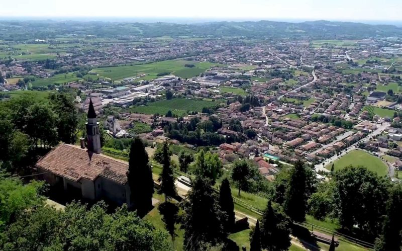
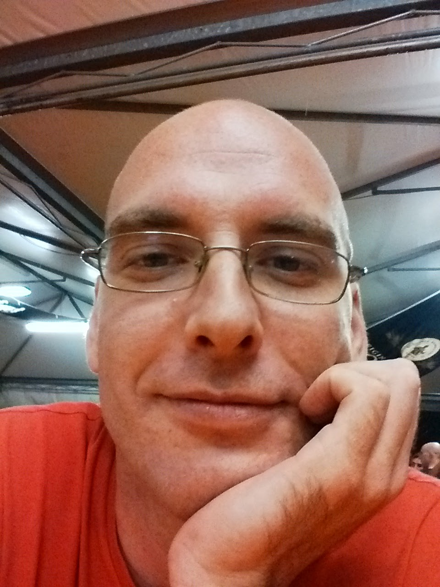

Mauro
admin@12kpro.net
Sono nato a Montebelluna 43 anni fa, da ragazzo ho praticato diversi sport, principalmente pallavolo, ma anche nuoto, ciclismo e judo. Ho studiato all' istituto tecnico agrario e successivamente ho seguito un corso in ingegneria industriale.
Mi piace leggere, sopratutto romanzi fantasy e gialli, non disprezzo alcune biografie. Mi piace la meccanica e l'elettronica, recentemente mi sono appassionato alla domotica, con risultati preoccupanti, in particolare frittura di dispositivi elettronici e scottature sulle dita. Quotidianamente mi prendo cura del mio amico a quattro zampe e di me stesso andando a fare delle passeggiate sui colli. Non diprezzo passare il tempo guardando serie anime o intrattenendomi con gli amici in qualche stressante sessione notturna di e-sports.
GitHubSono un'abile pigrone e odio le attivita ripetitive, cerco sempre il modo di sintetizzare e automatizzare il più possibile quello che faccio. Ma per il resto sono abbastanza energico e a volte mi stupisco, o mi pento delle brillanti idee che mi vengono. Non mi considero un grande creativo, ma penso che a volte siano proprio i problemi quotidiani a ispirarmi. Una frase che mi ripeto spesso nelle attività quotidiane è "Tranquillo, a gli altri funziona sempre tutto, caso strano se ci provo io, non funziona mai niente, non mollare che prima o poi ce la fai!." Ah si, ho il vizio di ironizarre spesso. Si può essere seri anche ridendo!.
Le mie competenze
- Perito tecnico agrario
- Tecnico della produzione
- Sistemista
- Programatore
Competenze da acquisire
- Concetti chiave per il Web development
- Lavoro in team su porgetti complessi
- Qualsiasi nozione utile a svolgere meglio il mio lavoro
| Periodo | Azienda | Attività |
|---|---|---|
| 1998-1999 | Novamobili | Operatore linea imballo/Carico |
| 1999-2000 | Baco | Operatore squadrabordatura |
| 2000-2001 | FederazioneProvincialeColtivatoriDiretti | Accatastamento vigneti |
| 2001-2007 | Follina Components | Responsabile tecnico |
| 2008-2017 | Libera professione |
|
| 2017-2022 | CantinaProduttoriValdobbiadene | Responsabile di reparto imbottigliamento |